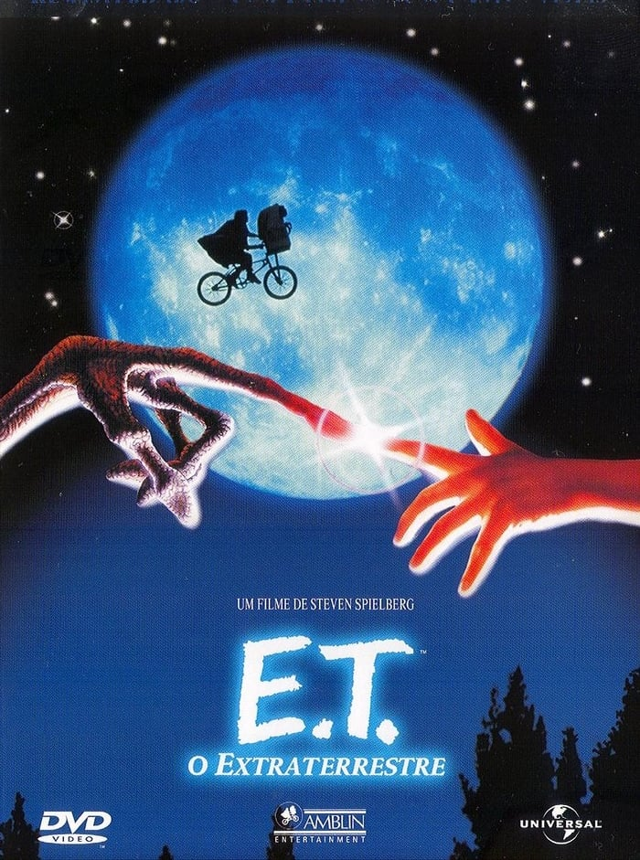

-
"O Poderoso Chefão" (1972)

Descrição: Dirigido por Francis Ford Coppola, este filme é uma obra-prima do cinema gangster. Ele segue a saga da família Corleone, liderada por Don Vito Corleone, interpretado por Marlon Brando, enquanto eles enfrentam desafios e rivalidades no submundo do crime de Nova York. O filme é conhecido por sua narrativa complexa, personagens memoráveis e atuações excepcionais.
-
"E.T. - O Extraterrestre" (1982)
Descrição: Dirigido por Steven Spielberg, "E.T. - O Extraterrestre" é uma emocionante história de amizade entre um jovem garoto chamado Elliott e um adorável alienígena chamado E.T. O filme captura a magia da infância e a busca por pertencimento, tornando-se um ícone da cultura pop.
-
"O Senhor dos Anéis: A Sociedade do Anel" (2001)

Descrição: Baseado na obra de J.R.R. Tolkien e dirigido por Peter Jackson, este épico de fantasia é o primeiro filme da trilogia "O Senhor dos Anéis". A história segue Frodo Baggins em sua jornada para destruir o Um Anel e salvar a Terra-média da escuridão. O filme é conhecido por seus efeitos visuais deslumbrantes e um mundo ricamente.
-
Titanic" (1997)

Dirigido por James Cameron, "Titanic" é uma epopeia romântica que se desenrola a bordo do famoso navio Titanic. O filme narra o amor proibido entre Jack (Leonardo DiCaprio) e Rose (Kate Winslet), enquanto o trágico destino do navio se desenrola. Além de sua história de amor cativante, o filme é lembrado por seus efeitos visuais revolucionários e trilha sonora emocionante.
 =======
=======
 >>>>>>> aec754996d519017bf2404e6ae7ec2e3406f6d9e:filmes.html
>>>>>>> aec754996d519017bf2404e6ae7ec2e3406f6d9e:filmes.html